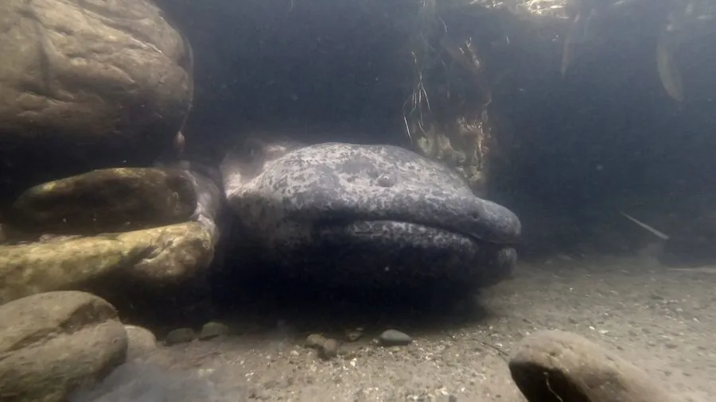

两栖动物 · 动物界
大鲵 Andrias davidianus

现存体型最大的两栖动物，体长可超过 1.5 米，叫声酷似婴儿啼哭，被称为“娃娃鱼”，已被列为极危物种。
- 分类
- 门脊索动物门纲两栖纲目有尾目科隐鳃鲵科属大鲵属
- 栖息环境
- 山区清凉湍急的溪流、深潭及岩洞石缝
- 地理分布
- 中国长江、黄河、珠江等流域的山区溪流
- 保护级别
- IUCN 极危（CR）；中国国家二级保护动物
物种志
大鲵体长 0.5–1.8 米，最大记录超过 2 米，是现存最大的两栖动物。它头扁阔，口大，眼睛小且无眼睑，体表光滑湿润、覆有黏液，背部棕褐色并带有深色斑块，四肢短粗，尾部侧扁，皮肤可辅助呼吸。
它生活在中国长江、黄河、珠江等水系的山区溪流与深潭，喜清凉湍急、多石缝的水体，夜间出洞捕食鱼、蟹、蛙、虾和水生昆虫，依靠头部两侧的侧线感受水流与猎物振动。每年 5–9 月繁殖，雌鲵产卵 400–1500 枚，雄鲵负责护卵，孵化期约 40–60 天，幼体用外鳃呼吸，长大后外鳃消失。由于被视为滋补野味而遭大量捕捉，加上溪流污染与筑坝，野生大鲵急剧减少，被列为极危物种，中国将其列为国家二级保护动物并开展人工养殖。
形态与习性
- 食性鱼、蟹、蛙、虾及水生昆虫
- 体长一般 0.5–1.5 m，最大可超 2 m
- 体重大型个体可达 50 kg 以上
- 寿命约 50–80 年
- 繁殖卵生，400–1500 枚，雄鲵护卵，孵化 40–60 天
- 活动节律夜行性，白天藏在石缝洞穴中
- 别名叫声似婴儿啼哭，俗称“娃娃鱼”
趣味知识
- 大鲵的叫声类似婴儿啼哭，“娃娃鱼”之名由此而来，但它并不是鱼。
- 它的皮肤布满黏液，可直接从水中吸收氧气，离开水也能短时存活。
- 大鲵是现存最大的两栖动物，其近亲的化石可追溯到上亿年前。